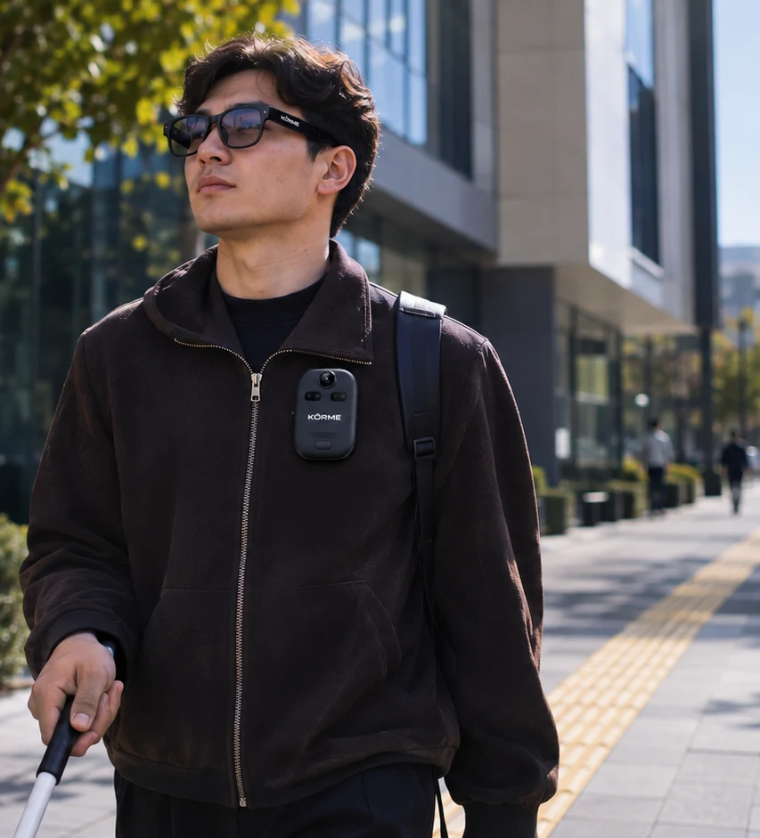
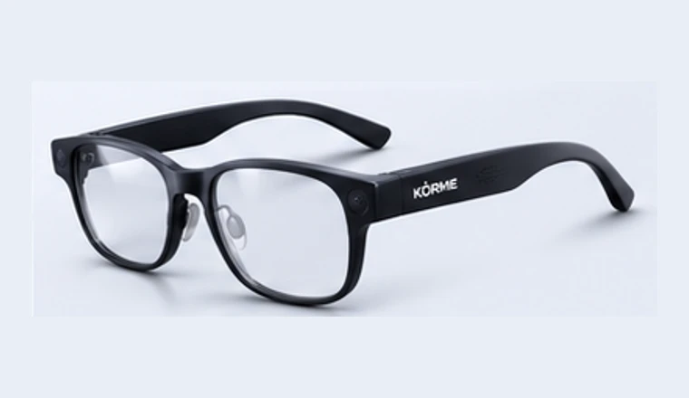
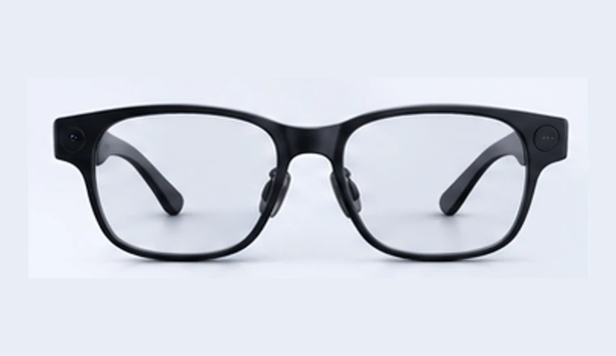
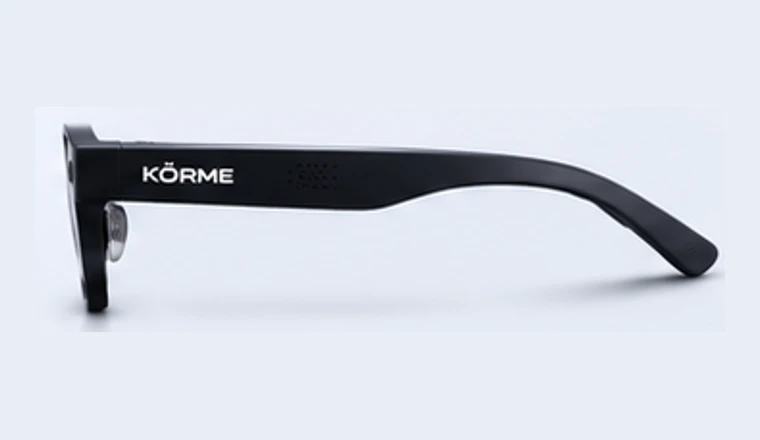
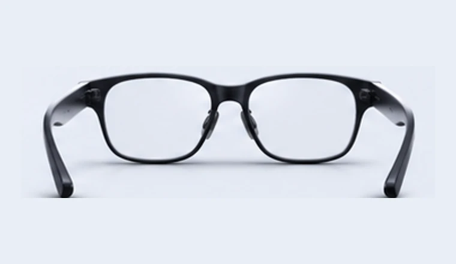
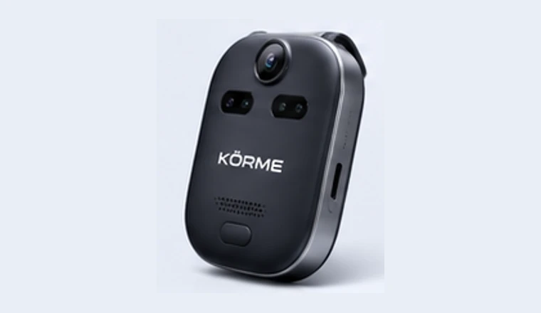
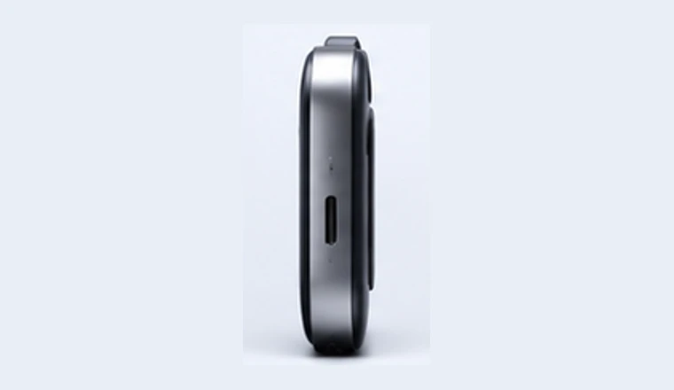
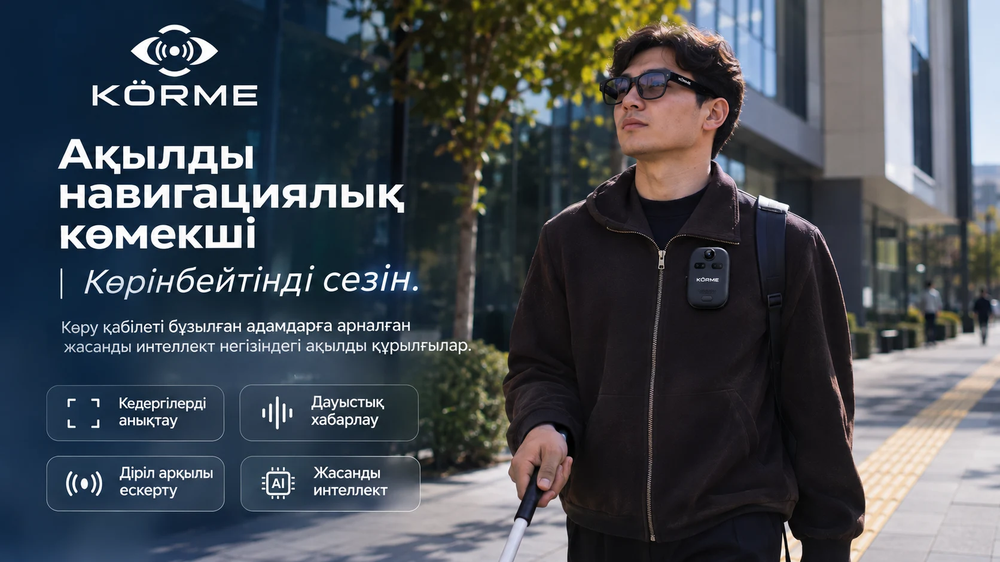

KÖRME Smart Glasses
Камерасы мен датчиктері бар, дауыстық нұсқауларға арналған ақылды көзілдірік тұжырымдамасы.

ҚАЗАҚСТАНДА ЖАСАЛАТЫН ТЕХНОЛОГИЯ
Көру қабілеті бұзылған адамдарға арналған ақылды навигациялық құрылғылар.
KÖRME экожүйесі
Қоршаған орта туралы қосымша ақпарат алуға көмектесетін құрылғылар тұжырымдамасы. Мүмкіндіктері әзірлеу барысында өзгеруі мүмкін.

Камерасы мен датчиктері бар, дауыстық нұсқауларға арналған ақылды көзілдірік тұжырымдамасы.
Камера, қашықтық датчиктері және дірілдік кері байланысы бар ықшам құрылғы тұжырымдамасы.
01 / Ақылды көзілдірік
Қоршаған орта туралы ақпарат. Күнделікті пішінде.




Ұсынылған тұжырымдама суреттерінің ракурстары. Нақты үш өлшемді модель емес.
Камера қоршаған орта туралы визуалды ақпарат алуға арналған.
Нысандарды тану арқылы қосымша ақпарат ұсыну көзделген.
Ақпаратты дыбыс арқылы жеткізу тұжырымдамасы.
Күнделікті тағуға арналған көзілдірік пішіні.
02 / Киілмелі көмекші
Күнделікті қозғалысқа арналған ақылды көмекші.




Ұсынылған тұжырымдама суреттерінің ракурстары. Нақты үш өлшемді модель емес.
Алдыңғы камера мен қашықтық датчиктері айнала туралы дерек жинауға арналған.
Діріл арқылы жақын маңдағы кедергілер туралы ескерту көзделген.
Артқы бекіту бөлігі құрылғыны киімге орналастыруға арналған.
Жұмыс қағидасы
Камера мен датчиктер айналадағы нысандар туралы дерек жинауы мүмкін.
Жүйе алынған ақпаратты өңдеуге арналған.
Жақын маңдағы кедергілер туралы болжамды ақпарат қалыптастыруы мүмкін.
Ақпарат дауыс немесе діріл арқылы берілуі мүмкін.
Зерттеу және әзірлеу
Ақпаратты өңдеу тұжырымдамасы.
Көріністегі нысандарды тануға арналған тәсілдер.
Арақашықтықты бағалауға арналған датчиктер.
Ақпаратты дыбыстық хабарламамен жеткізу.
Тактильді ескерту арқылы қосымша ақпарат ұсыну.
Күнделікті қолдану
Қалада немесе ғимарат ішінде айнала туралы қосымша ақпарат алу сценарийлері зерттелуде.

Біздің мақсатымыз — технология арқылы көру қабілеті бұзылған адамдардың қоршаған орта туралы ақпарат алу мүмкіндігін кеңейту.
KÖRME ақ таяқты және бағдарланудың кәсіби дағдыларын алмастырмайды. Құрылғылар қауіпсіз қозғалысқа кепілдік бермейді.
Өнімдер әзірлеу тұжырымдамасы ретінде ұсынылған. Сатып алу әзірге қолжетімсіз.